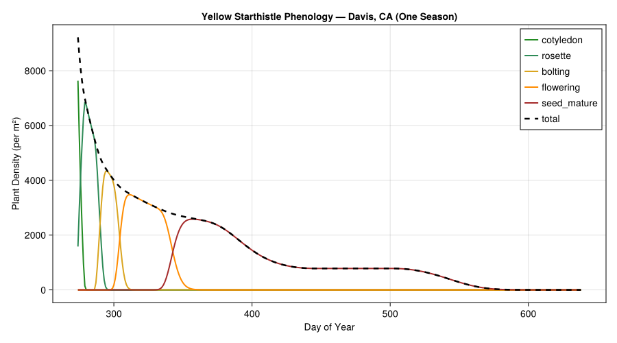
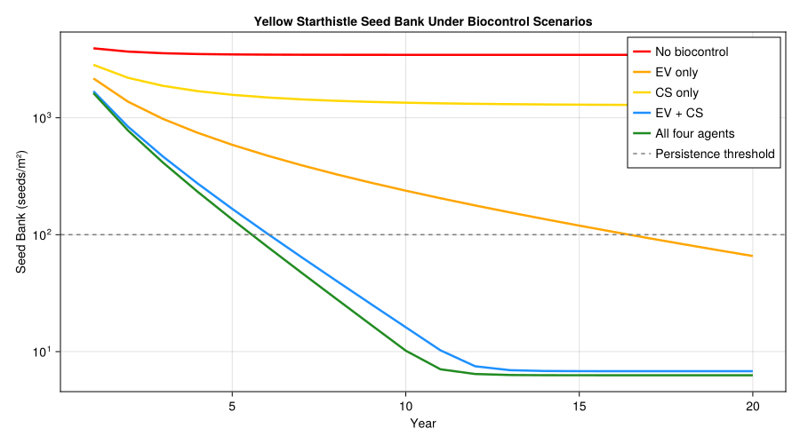
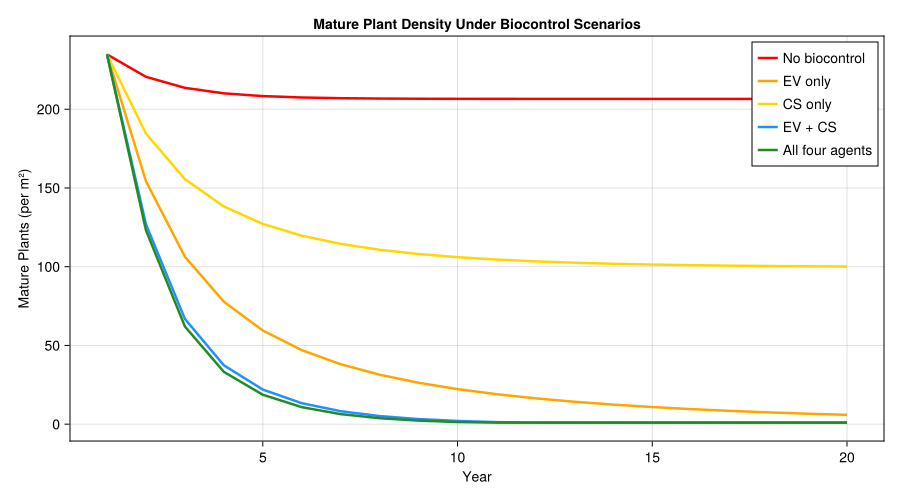
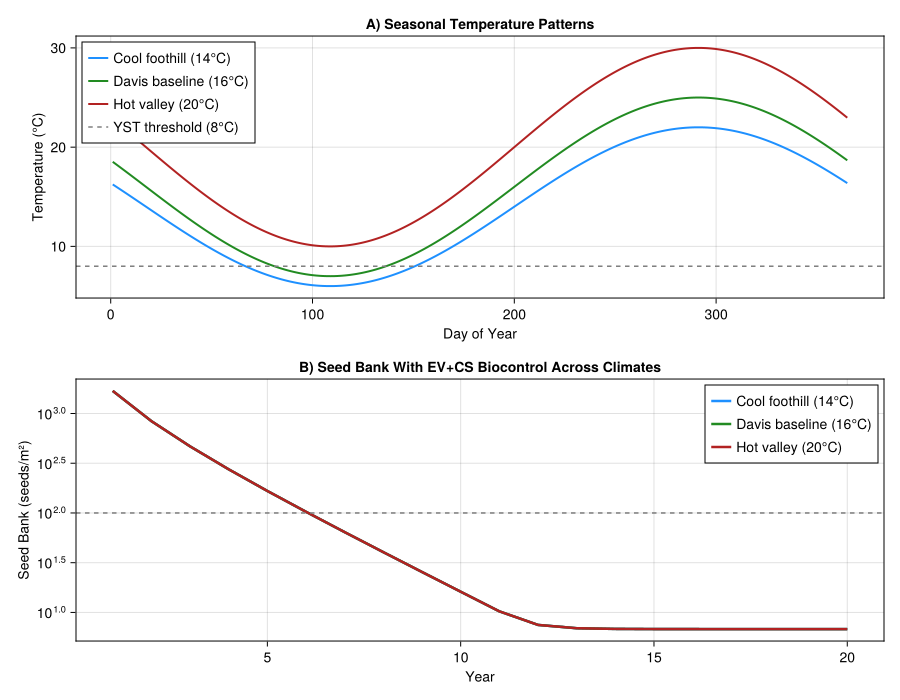
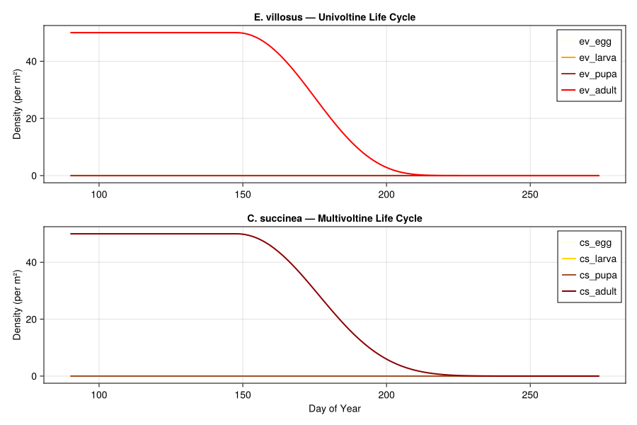
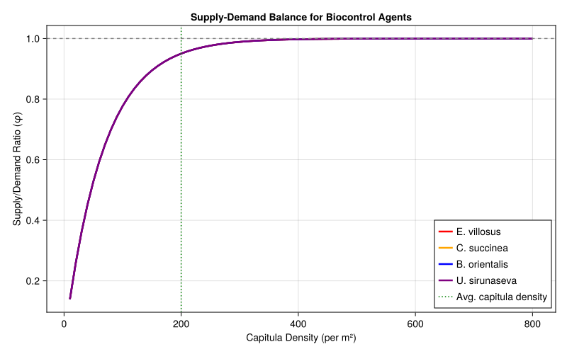
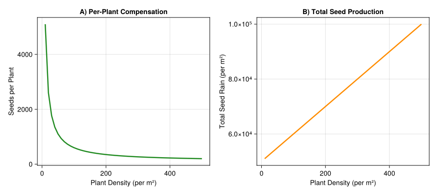

Yellow Starthistle Biological Control
- Background
- Model Parameters
- Parameter Sources
- Yellow Starthistle Life Stages
- Biocontrol Agent Life Stages
- Weather: Central California (Davis)
- Seed Bank Dynamics
- Supply–Demand Model for Seed Head Attack
- Competition Within Capitula
- Single-Season Simulation: YST Without Biocontrol
- Plotting YST Phenology
- Multi-Year Simulation With Seed Bank
- Biocontrol Scenario Comparison
- Plotting Biocontrol Impact on Seed Bank
- Plotting Mature Plant Density
- Temperature Sensitivity Analysis
- Insect Population Dynamics
- Supply–Demand Visualization
- Metabolic Pool: Weed Resource Allocation
- Compensation: Why Biocontrol Alone May Not Suffice
- Summary and Management Implications
- Key Insights
Primary reference: (Gutierrez et al. 2005).
Background
Yellow starthistle (Centaurea solstitialis L., Asteraceae) is one of the most damaging invasive weeds in western North America. Native to the Mediterranean region, it was first recorded near San Francisco Bay in 1859 and now infests over 3 million hectares of California rangelands, depleting soil moisture, displacing native grasses, and causing toxicity in horses. Dense stands produce up to 3000 capitula (seed heads) per m² and sustain a persistent soil seed bank that makes eradication extremely difficult.
A classical biological control program beginning in the 1980s released six capitulum-feeding insects. Of these, four became widely established in California:
| Agent | Type | Voltinism | Dominance |
|---|---|---|---|
| Eustenopus villosus (EV) | Seed weevil | Univoltine | Dominant |
| Bangasternus orientalis (BO) | Seed weevil | Univoltine | Subordinate to EV |
| Chaetorellia succinea (CS) | Seed fly | Multivoltine | Partially dominant to US |
| Urophora sirunaseva (US) | Gall fly | Multivoltine | Subordinate |
The combined impact of these agents reduces seed production by 50–75% at many sites, with E. villosus and C. succinea contributing the most. However, yellow starthistle compensates for seed loss at low plant densities by increasing per-plant capitulum production, and the soil seed bank buffers against year-to-year fluctuations.
This vignette implements a supply–demand physiologically based demographic model (PBDM) of the yellow starthistle–biocontrol agent system following Gutierrez et al. (2005) and the rosette weevil extension in Gutierrez et al. (2017). The model uses temperature-driven development for all species, a seed bank with annual carryover, rainfall-dependent germination, and competitive interactions among the biocontrol agents within seed heads.
References:
- Gutierrez, A.P., Pitcairn, M.J., Ellis, C.K., Carruthers, N. and Ghezelbash, R. (2005). Evaluating biological control of yellow starthistle (Centaurea solstitialis) in California: A GIS based supply–demand demographic model. Biological Control 34:115–131.
- Gutierrez, A.P., Ponti, L., Cristofaro, M., Smith, L. and Pitcairn, M.J. (2017). Assessing the biological control of yellow starthistle (Centaurea solstitialis L): prospective analysis of the impact of the rosette weevil (Ceratapion basicorne). Journal of Applied Entomology.
Model Parameters
using PhysiologicallyBasedDemographicModels
using CairoMakie
# --- Yellow starthistle thermal biology ---
# Lower developmental threshold: 8°C (Gutierrez et al. 2005)
# Upper threshold assumed 40°C (not limiting in California)
const YST_T_LOWER = 8.0
const YST_T_UPPER = 40.0 # assumed; not specified in paper
# --- Biocontrol agent thermal biology (Table 1, Gutierrez et al. 2005) ---
# Lower threshold: 9°C for all capitulum-feeding insects
# (lab-confirmed for C. succinea; assumed same for others — Section 2.2.2)
const INSECT_T_LOWER = 9.0
const INSECT_T_UPPER = 40.0 # assumed; not specified in paper
# --- Insect stage durations in DD > 9°C (Table 1, Gutierrez et al. 2005) ---
# E. villosus (EV, univoltine weevil)
const EV_EGG_DD = 43.0 # 0–43 DD
const EV_LARVA_DD = 105.0 # 44–148 DD
const EV_PUPA_DD = 75.0 # 149–223 DD
const EV_ADULT_DD = 257.0 # 224–480 DD (preoviposition 224–285 + adult 286–480)
# B. orientalis (BO, univoltine weevil)
const BO_EGG_DD = 43.0 # 0–43 DD
const BO_LARVA_DD = 105.0 # 44–148 DD
const BO_PUPA_DD = 75.0 # 149–223 DD
const BO_ADULT_DD = 888.0 # 224–1111 DD (preoviposition 224–285 + adult 286–1111)
# C. succinea (CS, multivoltine fly)
const CS_EGG_DD = 61.0 # 0–61 DD
const CS_LARVA_DD = 148.0 # 61–209 DD
const CS_PUPA_DD = 106.0 # 209–315 DD
const CS_ADULT_DD = 525.0 # 315–840 DD (preoviposition 315–402 + adult 402–840)
# U. sirunaseva (US, multivoltine fly) — same durations as CS
const US_EGG_DD = 61.0 # 0–61 DD
const US_LARVA_DD = 148.0 # 61–209 DD
const US_PUPA_DD = 106.0 # 209–315 DD
const US_ADULT_DD = 525.0 # 315–840 DD (preoviposition 315–402 + adult 402–840)
# --- Fecundity (Table 1, Gutierrez et al. 2005) ---
const EV_EGGS_PER_DD = 0.89 # eggs/female/DD; 174 lifetime total
const BO_EGGS_PER_DD = 0.41 # eggs/female/DD; 340 lifetime total
const CS_EGGS_PER_DD = 0.34 # eggs/female/DD; 136–167 lifetime total
const US_EGGS_PER_DD = 0.34 # eggs/female/DD; 136–167 lifetime total
# --- Search rate (Table 1: α = 0.75 for all species) ---
const INSECT_SEARCH_RATE = 0.75
# --- Egg predation rate (Table 1) ---
const BO_EGG_PREDATION = 0.30 # 30%/day; eggs laid externally
# EV, CS, US: 0% (eggs laid inside capitulum)
# --- Seed destruction per attacked capitulum (Table 1) ---
const EV_SEED_DESTRUCTION = 0.90 # >90%
const BO_SEED_DESTRUCTION = 0.50 # 50%
const CS_SEED_DESTRUCTION = 0.85 # 70–100% (midpoint)
const US_SEED_DESTRUCTION = 0.10 # 10% per gall
# --- Fruit age preference in DD > 9°C (Table 1) ---
const BO_FRUIT_PREF = (105.0, 525.0)
const EV_FRUIT_PREF = (315.0, 425.0)
const CS_FRUIT_PREF = (210.0, 425.0)
const US_FRUIT_PREF = (105.0, 315.0)
# --- Host feeding (Table 1) ---
const EV_HOST_FEEDING = 2 # seeds consumed per egg laid
# BO, CS, US: 0
# --- Sex ratio (Table 1: 1:1 for all species) ---
const INSECT_SEX_RATIO = 0.5 # fraction female
# --- Intrinsic mortality (Table 1, Gutierrez et al. 2005) ---
# Paper formula (supply-dependent):
# x = 0.5 * buds_available / R + 1.5
# μ_egg_larv = 0.001332 * x
# μ_adult = 0.00972 * x
# Simplified here as fixed rates; see paper for full formulation
const MORTALITY_COEFF_LARV = 0.001332
const MORTALITY_COEFF_ADULT = 0.00972
# Development rate models
yst_dev = LinearDevelopmentRate(YST_T_LOWER, YST_T_UPPER)
insect_dev = LinearDevelopmentRate(INSECT_T_LOWER, INSECT_T_UPPER)
# Verify development rates at key temperatures
println("Development rates (DD/day):")
println("="^50)
for T in [5.0, 8.0, 10.0, 15.0, 20.0, 25.0, 30.0]
dd_yst = degree_days(yst_dev, T)
dd_ins = degree_days(insect_dev, T)
println(" T=$(lpad(T, 5))°C → YST: $(round(dd_yst, digits=1)), " *
"Insects: $(round(dd_ins, digits=1))")
endDevelopment rates (DD/day):
==================================================
T= 5.0°C → YST: 0.0, Insects: 0.0
T= 8.0°C → YST: 0.0, Insects: 0.0
T= 10.0°C → YST: 2.0, Insects: 1.0
T= 15.0°C → YST: 7.0, Insects: 6.0
T= 20.0°C → YST: 12.0, Insects: 11.0
T= 25.0°C → YST: 17.0, Insects: 16.0
T= 30.0°C → YST: 22.0, Insects: 21.0Parameter Sources
The following table summarizes all model parameters, their values, and provenance. Parameters marked assumed are not directly given in the cited paper.
| Parameter | Value | Source | Notes |
|---|---|---|---|
| YST lower thermal threshold | 8 °C | Gutierrez et al. 2005, §2.2.2 | |
| YST upper thermal threshold | 40 °C | assumed | Not limiting in California |
| Insect lower thermal threshold | 9 °C | Table 1 | Lab-confirmed for CS; assumed same for others |
| Insect upper thermal threshold | 40 °C | assumed | Not specified in paper |
| EV egg duration | 0–43 DD | Table 1 | |
| EV larval duration | 44–148 DD | Table 1 | |
| EV pupal duration | 149–223 DD | Table 1 | |
| EV preoviposition | 224–285 DD | Table 1 | |
| EV adult duration | 286–480 DD (20 days) | Table 1 | |
| BO egg duration | 0–43 DD | Table 1 | |
| BO larval duration | 44–148 DD | Table 1 | |
| BO pupal duration | 149–223 DD | Table 1 | |
| BO preoviposition | 224–285 DD | Table 1 | |
| BO adult duration | 286–1111 DD (85 days) | Table 1 | |
| CS/US egg duration | 0–61 DD | Table 1 | |
| CS/US larval duration | 61–209 DD | Table 1 | |
| CS/US pupal duration | 209–315 DD | Table 1 | |
| CS/US preoviposition | 315–402 DD | Table 1 | |
| CS/US adult duration | 402–840 DD (27.8 days) | Table 1 | |
| Search rate (α) | 0.75 | Table 1 | Same for all four species |
| EV fecundity | 0.89 eggs/♀/DD; 174 total | Table 1 | |
| BO fecundity | 0.41 eggs/♀/DD; 340 total | Table 1 | |
| CS/US fecundity | 0.34 eggs/♀/DD; 136–167 total | Table 1 | |
| BO egg predation | 30 %/day | Table 1 | Eggs laid externally |
| EV/CS/US egg predation | 0 % | Table 1 | Eggs laid inside capitulum |
| EV host feeding | 2 seeds/egg | Table 1 | |
| BO/CS/US host feeding | 0 | Table 1 | |
| Sex ratio | 1∶1 | Table 1 | All species |
| EV seed destruction | \>90 % per capitulum | Table 1 | |
| BO seed destruction | 50 % per capitulum | Table 1 | |
| CS seed destruction | 70–100 % per capitulum | Table 1 | |
| US seed destruction | 10 % per gall | Table 1 | |
| EV fruit age preference | 315–425 DD | Table 1 | |
| BO fruit age preference | 105–525 DD | Table 1 | |
| CS fruit age preference | 210–425 DD | Table 1 | |
| US fruit age preference | 105–315 DD | Table 1 | |
| Mortality (egg/larva) | μ = 0.001332 × x | Table 1 | x = 0.5·buds_avail/R + 1.5 |
| Mortality (adult) | μ = 0.00972 × x | Table 1 | Simplified to fixed rates in code |
| Diapause survival | ~5 % overwinter | §1.2 | |
| Seed bank annual loss | ~70–80 %/year | §1.1; Joley et al. 1992, Benefield et al. 2001 | |
| Initial seed bank | 4500 seeds/m² | assumed | Based on field range in text |
| Seed germination fraction | 8 % | assumed | Chosen to match ~72 % mortality + 20 % carryover |
| Seed rain coefficient | 0.04 | assumed | Fitted to germination response |
| YST stage durations (DD \> 8 °C) | See code | estimated | From Fig. 1D and text descriptions |
| Competitive exclusion coefficients | See code | assumed | Qualitatively described in §2.2.3 |
| Biocontrol seed reduction scenarios | 0–76 % | Derived | From marginal analysis (§2.4) |
All “Table 1” references are to Gutierrez et al. (2005), Table 1.
Yellow Starthistle Life Stages
Yellow starthistle is a winter annual. Seeds germinate with autumn rains and grow through rosette, bolting, and flowering stages. Development is tracked in degree-days above 8°C. Capitulum buds initiate at ~0.01 per DD and mature over ~575 DD, reaching an average dry mass of 0.24 g (Gutierrez et al. 2005, Fig. 1D).
# YST life stages with distributed delay
# Durations in degree-days > 8°C, estimated from Gutierrez et al. (2005)
# Cotyledon/seedling: 0–100 DD
# Rosette: 100–350 DD
# Bolting: 350–600 DD
# Flowering/capitula: 600–1200 DD (capitula mature over ~575 DD)
# Seed maturation: 1200–1800 DD
yst_stages = [
LifeStage(:cotyledon, DistributedDelay(20, 100.0; W0=500.0), yst_dev, 0.005),
LifeStage(:rosette, DistributedDelay(25, 250.0; W0=0.0), yst_dev, 0.002),
LifeStage(:bolting, DistributedDelay(20, 250.0; W0=0.0), yst_dev, 0.001),
LifeStage(:flowering, DistributedDelay(30, 600.0; W0=0.0), yst_dev, 0.0005),
LifeStage(:seed_mature, DistributedDelay(15, 600.0; W0=0.0), yst_dev, 0.0003),
]
yst_pop = Population(:yellow_starthistle, yst_stages)
println("YST life stages:")
println(" Total stages: ", n_stages(yst_pop))
println(" Total substages: ", n_substages(yst_pop))
println(" Initial density: ", total_population(yst_pop), " plants/m²")YST life stages:
Total stages: 5
Total substages: 110
Initial density: 10000.0 plants/m²Biocontrol Agent Life Stages
The four capitulum-feeding insects have overlapping but distinct life histories. We model each with egg, larval, pupal, and adult stages. Parameters are from Table 1 of Gutierrez et al. (2005):
# --- Eustenopus villosus (seed weevil, univoltine) ---
# Most effective biocontrol agent; dominant competitor within capitula
# Egg: 0–43 DD, Larva: 44–148 DD, Pupa: 149–223 DD
# Preoviposition: 224–285 DD, Adult: 286–480 DD (Table 1, Gutierrez et al. 2005)
ev_stages = [
LifeStage(:ev_egg, DistributedDelay(10, EV_EGG_DD; W0=0.0), insect_dev, MORTALITY_COEFF_LARV),
LifeStage(:ev_larva, DistributedDelay(15, EV_LARVA_DD; W0=0.0), insect_dev, MORTALITY_COEFF_LARV),
LifeStage(:ev_pupa, DistributedDelay(10, EV_PUPA_DD; W0=0.0), insect_dev, MORTALITY_COEFF_LARV),
LifeStage(:ev_adult, DistributedDelay(10, EV_ADULT_DD; W0=5.0), insect_dev, MORTALITY_COEFF_ADULT),
]
ev_pop = Population(:eustenopus_villosus, ev_stages)
# --- Chaetorellia succinea (seed fly, multivoltine) ---
# Second most effective; 2–3 generations per year
# Egg: 0–61 DD, Larva: 61–209 DD, Pupa: 209–315 DD
# Preoviposition: 315–402 DD, Adult: 402–840 DD (Table 1, Gutierrez et al. 2005)
cs_stages = [
LifeStage(:cs_egg, DistributedDelay(10, CS_EGG_DD; W0=0.0), insect_dev, MORTALITY_COEFF_LARV),
LifeStage(:cs_larva, DistributedDelay(15, CS_LARVA_DD; W0=0.0), insect_dev, MORTALITY_COEFF_LARV),
LifeStage(:cs_pupa, DistributedDelay(10, CS_PUPA_DD; W0=0.0), insect_dev, MORTALITY_COEFF_LARV),
LifeStage(:cs_adult, DistributedDelay(10, CS_ADULT_DD; W0=5.0), insect_dev, MORTALITY_COEFF_ADULT),
]
cs_pop = Population(:chaetorellia_succinea, cs_stages)
# --- Bangasternus orientalis (seed weevil, univoltine) ---
# Less effective; eggs laid externally subject to 30%/day predation (Table 1)
# Egg: 0–43 DD, Larva: 44–148 DD, Pupa: 149–223 DD
# Preoviposition: 224–285 DD, Adult: 286–1111 DD (Table 1, Gutierrez et al. 2005)
bo_stages = [
LifeStage(:bo_egg, DistributedDelay(10, BO_EGG_DD; W0=0.0), insect_dev, BO_EGG_PREDATION),
LifeStage(:bo_larva, DistributedDelay(15, BO_LARVA_DD; W0=0.0), insect_dev, MORTALITY_COEFF_LARV),
LifeStage(:bo_pupa, DistributedDelay(10, BO_PUPA_DD; W0=0.0), insect_dev, MORTALITY_COEFF_LARV),
LifeStage(:bo_adult, DistributedDelay(10, BO_ADULT_DD; W0=5.0), insect_dev, MORTALITY_COEFF_ADULT),
]
bo_pop = Population(:bangasternus_orientalis, bo_stages)
# --- Urophora sirunaseva (gall fly, multivoltine) ---
# Least effective; subordinate to all other agents in capitula
# Egg: 0–61 DD, Larva: 61–209 DD, Pupa: 209–315 DD
# Preoviposition: 315–402 DD, Adult: 402–840 DD (Table 1, Gutierrez et al. 2005)
us_stages = [
LifeStage(:us_egg, DistributedDelay(10, US_EGG_DD; W0=0.0), insect_dev, MORTALITY_COEFF_LARV),
LifeStage(:us_larva, DistributedDelay(15, US_LARVA_DD; W0=0.0), insect_dev, MORTALITY_COEFF_LARV),
LifeStage(:us_pupa, DistributedDelay(10, US_PUPA_DD; W0=0.0), insect_dev, MORTALITY_COEFF_LARV),
LifeStage(:us_adult, DistributedDelay(10, US_ADULT_DD; W0=5.0), insect_dev, MORTALITY_COEFF_ADULT),
]
us_pop = Population(:urophora_sirunaseva, us_stages)
println("Biocontrol agents:")
for (name, pop) in [("E. villosus", ev_pop), ("C. succinea", cs_pop),
("B. orientalis", bo_pop), ("U. sirunaseva", us_pop)]
println(" $name: $(n_stages(pop)) stages, $(n_substages(pop)) substages, " *
"init=$(total_population(pop))")
endBiocontrol agents:
E. villosus: 4 stages, 45 substages, init=50.0
C. succinea: 4 stages, 45 substages, init=50.0
B. orientalis: 4 stages, 45 substages, init=50.0
U. sirunaseva: 4 stages, 45 substages, init=50.0Weather: Central California (Davis)
We use a synthetic seasonal temperature curve representative of Davis, Yolo County, California — the primary study site in Gutierrez et al. (2005). Davis has a Mediterranean climate with warm, dry summers and cool, wet winters. The growing season for yellow starthistle extends from autumn germination through late summer seed maturation.
# Davis, CA (38.5°N): Mediterranean climate
# Mean annual T ≈ 16°C, amplitude ≈ 9°C, peak in late July (day ~200)
# Rainy season: November–April; dry season: May–October
n_years = 20
n_days = 365 * n_years
# Sinusoidal temperature model
davis_weather = SinusoidalWeather(16.0, 9.0; phase=200.0, radiation=22.0)
# Show seasonal temperature pattern for one year
println("Davis, CA — Monthly mean temperatures:")
println("="^45)
for m in 1:12
d = 30 * m - 15 # mid-month
w = get_weather(davis_weather, d)
bar = repeat("█", max(1, round(Int, w.T_mean)))
println(" Month $(lpad(m, 2)): $(round(w.T_mean, digits=1))°C $bar")
endDavis, CA — Monthly mean temperatures:
=============================================
Month 1: 16.4°C ████████████████
Month 2: 11.9°C ████████████
Month 3: 8.5°C ████████
Month 4: 7.0°C ███████
Month 5: 7.9°C ████████
Month 6: 10.9°C ███████████
Month 7: 15.2°C ███████████████
Month 8: 19.8°C ████████████████████
Month 9: 23.3°C ███████████████████████
Month 10: 24.9°C █████████████████████████
Month 11: 24.3°C ████████████████████████
Month 12: 21.4°C █████████████████████Seed Bank Dynamics
The soil seed bank provides between-season persistence for yellow starthistle. Following Gutierrez et al. (2005, Eq. 9–10), approximately 72% of seeds die annually from various causes, 8% germinate in autumn, and 20% persist to the following year. After 4 years, only ~1% of a seed cohort remains viable (Joley et al. 1992, 2003; Benfield et al. 2001).
Seed germination depends on autumn rainfall intensity:
\[\varphi(t) = B(t) \cdot [1 - \exp(-0.04 \cdot \text{mm}(t))]\]
where $B(t)$ is the available seed bank and $\text{mm}(t)$ is daily rainfall.
# Seed bank parameters (Gutierrez et al. 2005)
const SEED_ANNUAL_MORTALITY = 0.72 # fraction dying per year
const SEED_GERMINATION_FRAC = 0.08 # fraction germinating
const SEED_CARRYOVER_FRAC = 0.20 # fraction persisting to next year
const SEED_RAIN_COEFF = 0.04 # germination response to rainfall
const INITIAL_SEED_BANK = 4500.0 # seeds/m² (Gutierrez et al. 2005)
const YST_SELF_THINNING_CAPACITY = 650.0 # seedlings supported to maturity per m²
const YST_GRASS_COMPETITION = 0.22 # 20–25% reduction from annual grasses
const YST_CAPITULA_PER_PLANT_MIN = 1.0
const YST_CAPITULA_PER_PLANT_MAX = 3.5
const YST_CAPITULA_COMP_HALF_SAT = 200.0
const YST_SEEDS_PER_CAPITULUM = 6.0
yst_density_response = FraserGilbertResponse(0.75)
function mature_density_from_seedlings(seedlings; grass_competition=YST_GRASS_COMPETITION)
supply = YST_SELF_THINNING_CAPACITY * (1.0 - grass_competition)
return acquire(yst_density_response, supply, max(seedlings, 1e-6))
end
function capitula_per_plant(mature_density)
compensation = YST_CAPITULA_COMP_HALF_SAT /
(YST_CAPITULA_COMP_HALF_SAT + max(mature_density, 1.0))
return YST_CAPITULA_PER_PLANT_MIN +
(YST_CAPITULA_PER_PLANT_MAX - YST_CAPITULA_PER_PLANT_MIN) * compensation
end
# Seed survival curve
println("Seed bank depletion over time:")
println("="^45)
seed_remaining = INITIAL_SEED_BANK
for yr in 0:5
pct = 100 * seed_remaining / INITIAL_SEED_BANK
bar = repeat("█", max(1, round(Int, pct / 2)))
println(" Year $yr: $(round(seed_remaining, digits=0)) seeds/m² " *
"($(round(pct, digits=1))%) $bar")
seed_remaining *= SEED_CARRYOVER_FRAC
end
# Germination response to rainfall
println("\nGermination fraction vs daily rainfall:")
for mm in [0.0, 2.0, 5.0, 10.0, 25.0, 50.0]
germ = 1.0 - exp(-SEED_RAIN_COEFF * mm)
println(" $(lpad(mm, 5)) mm → $(round(100 * germ, digits=1))% of available seed")
endSeed bank depletion over time:
=============================================
Year 0: 4500.0 seeds/m² (100.0%) ██████████████████████████████████████████████████
Year 1: 900.0 seeds/m² (20.0%) ██████████
Year 2: 180.0 seeds/m² (4.0%) ██
Year 3: 36.0 seeds/m² (0.8%) █
Year 4: 7.0 seeds/m² (0.2%) █
Year 5: 1.0 seeds/m² (0.0%) █
Germination fraction vs daily rainfall:
0.0 mm → 0.0% of available seed
2.0 mm → 7.7% of available seed
5.0 mm → 18.1% of available seed
10.0 mm → 33.0% of available seed
25.0 mm → 63.2% of available seed
50.0 mm → 86.5% of available seedSupply–Demand Model for Seed Head Attack
The core of the PBDM approach is the Gutierrez–Baumgärtner functional response (Gutierrez 1992). The rate at which biocontrol agents find and attack capitula is modeled as a ratio-dependent process where the supply (available capitula) and demand (insect oviposition requirements) interact:
\[S(t) = D_n C_n \left[1 - \exp\left(\frac{-\alpha_n R(t)}{D_n C_n}\right)\right]\]
where $R(t)$ is the resource (capitula) density, $D_n$ is per-capita demand, $C_n$ is consumer density, and $\alpha_n$ is the search rate. This is exactly the FraserGilbertResponse in the package.
# Supply-demand functional response for capitulum attack
# Search rate α = 0.75 for all species (Table 1, Gutierrez et al. 2005)
ev_response = FraserGilbertResponse(INSECT_SEARCH_RATE) # E. villosus
cs_response = FraserGilbertResponse(INSECT_SEARCH_RATE) # C. succinea
bo_response = FraserGilbertResponse(INSECT_SEARCH_RATE) # B. orientalis
us_response = FraserGilbertResponse(INSECT_SEARCH_RATE) # U. sirunaseva
# Demonstrate supply-demand dynamics
println("Capitulum attack rate (fraction of demand met):")
println("="^55)
println(" Supply/Demand EV CS BO US")
for ratio in [0.1, 0.5, 1.0, 2.0, 5.0, 10.0]
demand = 10.0
supply = ratio * demand
ev_sd = supply_demand_ratio(ev_response, supply, demand)
cs_sd = supply_demand_ratio(cs_response, supply, demand)
bo_sd = supply_demand_ratio(bo_response, supply, demand)
us_sd = supply_demand_ratio(us_response, supply, demand)
println(" $(lpad(ratio, 6)) " *
"$(round(ev_sd, digits=3)) $(round(cs_sd, digits=3)) " *
"$(round(bo_sd, digits=3)) $(round(us_sd, digits=3))")
endCapitulum attack rate (fraction of demand met):
=======================================================
Supply/Demand EV CS BO US
0.1 0.072 0.072 0.072 0.072
0.5 0.313 0.313 0.313 0.313
1.0 0.528 0.528 0.528 0.528
2.0 0.777 0.777 0.777 0.777
5.0 0.976 0.976 0.976 0.976
10.0 0.999 0.999 0.999 0.999Competition Within Capitula
When multiple herbivore species co-occur within a capitulum, dominance determines which species survive. E. villosus larvae are dominant and kill all other species present. C. succinea is partially dominant over U. sirunaseva. These interactions are captured by adjusting survival based on co-occurrence probabilities (Gutierrez et al. 2005, Section 2.2.3).
# Dominance hierarchy: EV > BO > CS > US (within capitula)
# Per-capitulum seed destruction (Table 1, Gutierrez et al. 2005)
const SEED_DAMAGE_PER_LARVA = Dict(
:eustenopus_villosus => EV_SEED_DESTRUCTION, # >90%
:bangasternus_orientalis => BO_SEED_DESTRUCTION, # 50%
:chaetorellia_succinea => CS_SEED_DESTRUCTION, # 70–100% (midpoint)
:urophora_sirunaseva => US_SEED_DESTRUCTION, # 10% per gall
)
# Interspecific competitive effects (proportion of subordinate killed)
const COMPETITIVE_EXCLUSION = Dict(
(:eustenopus_villosus, :bangasternus_orientalis) => 0.95,
(:eustenopus_villosus, :chaetorellia_succinea) => 0.80,
(:eustenopus_villosus, :urophora_sirunaseva) => 0.90,
(:chaetorellia_succinea, :urophora_sirunaseva) => 0.60,
)
println("Seed damage per larva by species:")
for (sp, dmg) in sort(collect(SEED_DAMAGE_PER_LARVA), by=x->-x[2])
bar = repeat("█", round(Int, dmg * 40))
println(" $(rpad(sp, 28)) $(round(dmg, digits=2)) $bar")
endSeed damage per larva by species:
eustenopus_villosus 0.9 ████████████████████████████████████
chaetorellia_succinea 0.85 ██████████████████████████████████
bangasternus_orientalis 0.5 ████████████████████
urophora_sirunaseva 0.1 ████Single-Season Simulation: YST Without Biocontrol
First, we simulate one season of yellow starthistle growth alone to establish baseline phenology and seed production. The simulation begins on October 1 (day 274) with autumn germination and runs through the following September.
# One-year simulation: October 1 to September 30
prob_yst = PBDMProblem(yst_pop, davis_weather, (274, 274 + 364))
sol_yst = solve(prob_yst, DirectIteration())
println(sol_yst)
# Track phenological stages
stage_names = [:cotyledon, :rosette, :bolting, :flowering, :seed_mature]
println("\nYST phenology (one season at Davis, CA):")
println("="^60)
for (i, name) in enumerate(stage_names)
traj = stage_trajectory(sol_yst, i)
peak_val = maximum(traj)
peak_idx = argmax(traj)
peak_day = sol_yst.t[peak_idx]
println(" $(rpad(name, 15)) peak=$(round(peak_val, digits=1)) " *
"plants/m² (day $peak_day)")
end
# Degree-day accumulation
cdd = cumulative_degree_days(sol_yst)
println("\nTotal degree-days (>8°C): $(round(cdd[end], digits=0))")
println("Season length: $(length(sol_yst.t)) days")PBDMSolution(365 days, 5 stages, retcode=Success)
YST phenology (one season at Davis, CA):
============================================================
cotyledon peak=7635.9 plants/m² (day 274)
rosette peak=6850.1 plants/m² (day 279)
bolting peak=4335.3 plants/m² (day 295)
flowering peak=3476.1 plants/m² (day 311)
seed_mature peak=2582.6 plants/m² (day 357)
Total degree-days (>8°C): 2957.0
Season length: 365 daysPlotting YST Phenology
fig1 = Figure(size=(900, 500))
ax1 = Axis(fig1[1, 1],
xlabel="Day of Year",
ylabel="Plant Density (per m²)",
title="Yellow Starthistle Phenology — Davis, CA (One Season)")
colors = [:forestgreen, :seagreen, :goldenrod, :darkorange, :brown]
for (i, (name, col)) in enumerate(zip(stage_names, colors))
traj = stage_trajectory(sol_yst, i)
lines!(ax1, sol_yst.t, traj, label=String(name), color=col, linewidth=2)
end
# Total population
total_pop = total_population(sol_yst)
lines!(ax1, sol_yst.t, total_pop,
label="total", color=:black, linewidth=2.5, linestyle=:dash)
axislegend(ax1, position=:rt)
fig1
Multi-Year Simulation With Seed Bank
To capture the population dynamics realistically, we simulate multiple years with seed bank carryover. Each year, the seed bank balance is updated:
\[B_{\text{soil}}(y+1) = 0.20 \cdot B_{\text{soil}}(y) + \Delta v(y)\]
where $\Delta v(y)$ is the current year’s seed production.
Within a season, we keep the paper’s 8% germination and 20% carryover bookkeeping, but we also enforce the manuscript’s self-thinning and bounded compensation logic. Seedlings are thinned via a supply-demand step to a few hundred mature plants per m², and low-density plants can increase capitula production only within the observed range rather than without bound.
# Multi-year simulation with explicit seed bank tracking
function simulate_multiyear_yst(weather, n_years;
initial_seed_bank=INITIAL_SEED_BANK,
biocontrol_seed_reduction=0.0)
seed_bank = initial_seed_bank
annual_seeds = Float64[]
annual_plants = Float64[]
annual_seed_bank = Float64[]
for yr in 1:n_years
# Germination: 8% of seed bank determines initial seedling density
seedlings = seed_bank * SEED_GERMINATION_FRAC
seedlings = max(seedlings, 1.0)
# Set up population for this season
yr_stages = [
LifeStage(:cotyledon, DistributedDelay(20, 100.0; W0=seedlings), yst_dev, 0.005),
LifeStage(:rosette, DistributedDelay(25, 250.0; W0=0.0), yst_dev, 0.002),
LifeStage(:bolting, DistributedDelay(20, 250.0; W0=0.0), yst_dev, 0.001),
LifeStage(:flowering, DistributedDelay(30, 600.0; W0=0.0), yst_dev, 0.0005),
LifeStage(:seed_mature, DistributedDelay(15, 600.0; W0=0.0), yst_dev, 0.0003),
]
yr_pop = Population(:yst, yr_stages)
# Simulate one season (Oct–Sep)
start_day = 274 + (yr - 1) * 365
end_day = start_day + 364
prob = PBDMProblem(yr_pop, weather, (start_day, end_day))
sol = solve(prob, DirectIteration())
# End-of-season seed production is limited by development success,
# self-thinning, and bounded compensatory capitulum production.
mature_traj = stage_trajectory(sol, 5)
development_success = clamp(maximum(mature_traj) / max(seedlings, 1.0), 0.15, 1.0)
mature_plants = mature_density_from_seedlings(seedlings) * development_success
capitula_density = mature_plants * capitula_per_plant(mature_plants)
new_seeds = capitula_density * YST_SEEDS_PER_CAPITULUM
# Apply biocontrol seed reduction
new_seeds *= (1.0 - biocontrol_seed_reduction)
# Update seed bank
seed_bank = SEED_CARRYOVER_FRAC * seed_bank + new_seeds
push!(annual_seeds, new_seeds)
push!(annual_plants, mature_plants)
push!(annual_seed_bank, seed_bank)
end
return (seeds=annual_seeds, plants=annual_plants, seed_bank=annual_seed_bank)
end
# Baseline: no biocontrol
baseline = simulate_multiyear_yst(davis_weather, 20)
println("Multi-year YST dynamics (no biocontrol):")
println("="^55)
for yr in [1, 5, 10, 15, 20]
println(" Year $(lpad(yr, 2)): seed bank=$(round(baseline.seed_bank[yr], digits=0)), " *
"plants=$(round(baseline.plants[yr], digits=1)), " *
"seeds=$(round(baseline.seeds[yr], digits=0))")
endMulti-year YST dynamics (no biocontrol):
=======================================================
Year 1: seed bank=3929.0, plants=234.8, seeds=3029.0
Year 5: seed bank=3483.0, plants=208.3, seeds=2781.0
Year 10: seed bank=3455.0, plants=206.6, seeds=2764.0
Year 15: seed bank=3454.0, plants=206.5, seeds=2763.0
Year 20: seed bank=3454.0, plants=206.5, seeds=2763.0Biocontrol Scenario Comparison
We compare five scenarios representing different stages of the biological control program, following the marginal analysis approach of Gutierrez et al. (2005, Section 2.4):
- No biocontrol — baseline weed dynamics
- EV only — E. villosus alone (most effective single agent)
- CS only — C. succinea alone (second most effective)
- EV + CS — the dominant agent combination
- All four agents — complete biocontrol guild
The seed reduction fractions are derived from the regression analyses in Gutierrez et al. (2005, Eqs. 15–20).
# Biocontrol scenarios: estimated seed reduction fractions
# From marginal analysis (Gutierrez et al. 2005)
scenarios = [
("No biocontrol", 0.00),
("EV only", 0.58), # E. villosus alone: 58% seed reduction
("CS only", 0.36), # C. succinea alone: 36% reduction
("EV + CS", 0.74), # Combined: 74% (with antagonistic interaction)
("All four agents", 0.76), # All four: marginal improvement from BO, US
]
results = Dict{String, NamedTuple}()
for (name, reduction) in scenarios
results[name] = simulate_multiyear_yst(davis_weather, 20;
biocontrol_seed_reduction=reduction)
end
println("Seed bank density after 20 years by scenario:")
println("="^55)
for (name, _) in scenarios
sb = results[name].seed_bank[end]
bar = repeat("█", max(1, round(Int, log10(max(sb, 1)) * 5)))
println(" $(rpad(name, 20)) $(round(sb, digits=0)) seeds/m² $bar")
endSeed bank density after 20 years by scenario:
=======================================================
No biocontrol 3454.0 seeds/m² ██████████████████
EV only 66.0 seeds/m² █████████
CS only 1282.0 seeds/m² ████████████████
EV + CS 7.0 seeds/m² ████
All four agents 6.0 seeds/m² ████Plotting Biocontrol Impact on Seed Bank
fig2 = Figure(size=(900, 500))
ax2 = Axis(fig2[1, 1],
xlabel="Year",
ylabel="Seed Bank (seeds/m²)",
title="Yellow Starthistle Seed Bank Under Biocontrol Scenarios",
yscale=log10)
scenario_colors = [:red, :orange, :gold, :dodgerblue, :forestgreen]
for (i, (name, _)) in enumerate(scenarios)
sb = results[name].seed_bank
lines!(ax2, 1:20, sb, label=name,
color=scenario_colors[i], linewidth=2.5)
end
# Persistence threshold
hlines!(ax2, [100.0], color=:gray50, linestyle=:dash, linewidth=1.5,
label="Persistence threshold")
axislegend(ax2, position=:rt)
fig2
Plotting Mature Plant Density
fig3 = Figure(size=(900, 500))
ax3 = Axis(fig3[1, 1],
xlabel="Year",
ylabel="Mature Plants (per m²)",
title="Mature Plant Density Under Biocontrol Scenarios")
for (i, (name, _)) in enumerate(scenarios)
pl = results[name].plants
lines!(ax3, 1:20, pl, label=name,
color=scenario_colors[i], linewidth=2.5)
end
axislegend(ax3, position=:rt)
fig3
Temperature Sensitivity Analysis
Yellow starthistle’s distribution in California is shaped by climate. Hotter, drier inland valleys have shorter growing seasons, while coastal and foothill areas support more persistent populations. We compare three temperature regimes.
# Temperature scenarios
temp_scenarios = [
("Cool foothill (14°C)", SinusoidalWeather(14.0, 8.0; phase=200.0)),
("Davis baseline (16°C)", SinusoidalWeather(16.0, 9.0; phase=200.0)),
("Hot valley (20°C)", SinusoidalWeather(20.0, 10.0; phase=200.0)),
]
fig4 = Figure(size=(900, 700))
# Panel A: Temperature patterns
ax4a = Axis(fig4[1, 1],
xlabel="Day of Year", ylabel="Temperature (°C)",
title="A) Seasonal Temperature Patterns")
temp_colors = [:dodgerblue, :forestgreen, :firebrick]
for (i, (name, w)) in enumerate(temp_scenarios)
temps = [get_weather(w, d).T_mean for d in 1:365]
lines!(ax4a, 1:365, temps, label=name, color=temp_colors[i], linewidth=2)
end
hlines!(ax4a, [YST_T_LOWER], color=:gray, linestyle=:dash, label="YST threshold (8°C)")
axislegend(ax4a, position=:lt)
# Panel B: Seed bank trajectory under each temperature regime with EV+CS biocontrol
ax4b = Axis(fig4[2, 1],
xlabel="Year", ylabel="Seed Bank (seeds/m²)",
title="B) Seed Bank With EV+CS Biocontrol Across Climates",
yscale=log10)
for (i, (name, w)) in enumerate(temp_scenarios)
result = simulate_multiyear_yst(w, 20; biocontrol_seed_reduction=0.74)
lines!(ax4b, 1:20, result.seed_bank, label=name,
color=temp_colors[i], linewidth=2.5)
end
hlines!(ax4b, [100.0], color=:gray50, linestyle=:dash)
axislegend(ax4b, position=:rt)
fig4
Insect Population Dynamics
We illustrate the within-season dynamics of the biocontrol agents using the distributed delay model. Each agent’s development is tracked in degree-days above 9°C, with maturation from diapause timed to coincide with capitulum availability in spring.
# Simulate individual insect populations for one season
# Starting from 5 overwintering adults per m² in spring (day 90)
function simulate_insect_season(insect_pop, weather; start_day=90, end_day=274)
prob = PBDMProblem(insect_pop, weather, (start_day, end_day))
sol = solve(prob, DirectIteration())
return sol
end
# Simulate EV and CS for one season
sol_ev = simulate_insect_season(ev_pop, davis_weather)
sol_cs = simulate_insect_season(cs_pop, davis_weather)
fig5 = Figure(size=(900, 600))
# EV dynamics
ax5a = Axis(fig5[1, 1],
ylabel="Density (per m²)",
title="E. villosus — Univoltine Life Cycle")
ev_stage_names = [:ev_egg, :ev_larva, :ev_pupa, :ev_adult]
ev_colors = [:lightyellow, :orange, :brown, :red]
for (i, (name, col)) in enumerate(zip(ev_stage_names, ev_colors))
traj = stage_trajectory(sol_ev, i)
lines!(ax5a, sol_ev.t, traj, label=String(name), color=col, linewidth=2)
end
axislegend(ax5a, position=:rt)
# CS dynamics
ax5b = Axis(fig5[2, 1],
xlabel="Day of Year",
ylabel="Density (per m²)",
title="C. succinea — Multivoltine Life Cycle")
cs_stage_names = [:cs_egg, :cs_larva, :cs_pupa, :cs_adult]
cs_colors = [:lightyellow, :gold, :sienna, :darkred]
for (i, (name, col)) in enumerate(zip(cs_stage_names, cs_colors))
traj = stage_trajectory(sol_cs, i)
lines!(ax5b, sol_cs.t, traj, label=String(name), color=col, linewidth=2)
end
axislegend(ax5b, position=:rt)
fig5
Supply–Demand Visualization
The supply/demand ratio is the central diagnostic of PBDM models. When supply (capitula) exceeds demand (insect oviposition needs), the agents are food-limited and attack rates decline. When demand exceeds supply, nearly all capitula are attacked but emigration and mortality increase among the agents.
# Demonstrate supply-demand ratio across a range of capitula densities
fig6 = Figure(size=(800, 500))
ax6 = Axis(fig6[1, 1],
xlabel="Capitula Density (per m²)",
ylabel="Supply/Demand Ratio (φ)",
title="Supply-Demand Balance for Biocontrol Agents")
capitula_range = 10.0:10.0:800.0
insect_demand = 50.0 # baseline insect demand
for (name, resp, col) in [
("E. villosus", ev_response, :red),
("C. succinea", cs_response, :orange),
("B. orientalis", bo_response, :blue),
("U. sirunaseva", us_response, :purple)]
sd = [supply_demand_ratio(resp, cap, insect_demand) for cap in capitula_range]
lines!(ax6, collect(capitula_range), sd, label=name, color=col, linewidth=2.5)
end
hlines!(ax6, [1.0], color=:gray, linestyle=:dash)
vlines!(ax6, [200.0], color=:green, linestyle=:dot, label="Avg. capitula density")
axislegend(ax6, position=:rb)
fig6
Metabolic Pool: Weed Resource Allocation
Yellow starthistle allocates photosynthate in priority order following the PBDM paradigm: respiration → reproduction (capitula) → vegetative growth. When the supply/demand ratio drops (e.g., due to drought or competition from grasses), reproduction is sacrificed first, then growth.
# Demonstrate resource allocation under different stress levels
println("Resource Allocation Under Varying S/D Ratios:")
println("="^65)
println(" S/D Respiration Reproduction Veg. Growth Surplus")
for sd in [0.2, 0.4, 0.6, 0.8, 1.0, 1.5]
supply = sd * 100.0
demands = [30.0, 40.0, 20.0] # respiration, reproduction, growth
labels = [:respiration, :reproduction, :veg_growth]
pool = MetabolicPool(supply, demands, labels)
alloc = allocate(pool)
surplus = max(0.0, supply - sum(demands))
println(" $(rpad(sd, 5)) " *
"$(lpad(round(alloc[1], digits=1), 10)) " *
"$(lpad(round(alloc[2], digits=1), 12)) " *
"$(lpad(round(alloc[3], digits=1), 10)) " *
"$(lpad(round(surplus, digits=1), 7))")
endResource Allocation Under Varying S/D Ratios:
=================================================================
S/D Respiration Reproduction Veg. Growth Surplus
0.2 20.0 0.0 0.0 0.0
0.4 30.0 10.0 0.0 0.0
0.6 30.0 30.0 0.0 0.0
0.8 30.0 40.0 10.0 0.0
1.0 30.0 40.0 20.0 10.0
1.5 30.0 40.0 20.0 60.0Compensation: Why Biocontrol Alone May Not Suffice
A key finding of Gutierrez et al. (2005) is that yellow starthistle compensates for seed loss at low plant densities by producing more capitula per plant. This density-dependent compensation means that even 75% seed reduction may not drive the weed to extinction — the seed bank acts as a buffer across years with variable rainfall and biocontrol pressure.
# Compensation curve: seeds per plant vs. plant density
plant_densities = 10.0:10.0:500.0
seeds_per_plant = [100.0 * (1.0 + 500.0 / max(d, 1.0)) for d in plant_densities]
total_seeds = [d * s for (d, s) in zip(plant_densities, seeds_per_plant)]
fig7 = Figure(size=(900, 400))
ax7a = Axis(fig7[1, 1],
xlabel="Plant Density (per m²)",
ylabel="Seeds per Plant",
title="A) Per-Plant Compensation")
lines!(ax7a, collect(plant_densities), seeds_per_plant, color=:forestgreen, linewidth=2.5)
ax7b = Axis(fig7[1, 2],
xlabel="Plant Density (per m²)",
ylabel="Total Seed Rain (per m²)",
title="B) Total Seed Production")
lines!(ax7b, collect(plant_densities), total_seeds, color=:darkorange, linewidth=2.5)
fig7
Summary and Management Implications
println("="^65)
println("YELLOW STARTHISTLE BIOLOGICAL CONTROL — KEY FINDINGS")
println("="^65)
println("""
1. AGENT EFFECTIVENESS (after Gutierrez et al. 2005):
• E. villosus alone reduces seeds ~58%
• C. succinea alone reduces seeds ~36%
• Combined (EV + CS) reduces seeds ~74%
• Adding BO and US provides only marginal benefit (~76%)
2. COMPETITIVE INTERACTIONS:
• EV larvae are dominant — kill all co-occurring species
• This reduces the net biocontrol impact: the EV×CS interaction
increases seed survival by ~13%, partially offsetting CS impact
• BO is nearly excluded wherever EV is abundant
3. COMPENSATION:
• At low plant densities, per-plant seed production increases
• This density-dependent response limits biocontrol efficacy
• The persistent seed bank (20%/year carryover) buffers populations
against years of high biocontrol pressure
4. CLIMATE EFFECTS:
• Longer, warmer seasons favor both weed and insect development
• Very hot, dry areas limit YST (insufficient rainfall for germination)
• Coastal and foothill regions have highest YST persistence risk
5. MANAGEMENT IMPLICATIONS:
• Seed-head biocontrol alone unlikely to eradicate YST
• Integrated approaches needed: biocontrol + competitive grasses
• Rosette-stage herbivory (e.g., Ceratapion basicorne) may provide
the additional stress needed by reducing plant vigor before seed set
• Competition from annual grasses reduces YST ~20–25% additionally
""")=================================================================
YELLOW STARTHISTLE BIOLOGICAL CONTROL — KEY FINDINGS
=================================================================
1. AGENT EFFECTIVENESS (after Gutierrez et al. 2005):
• E. villosus alone reduces seeds ~58%
• C. succinea alone reduces seeds ~36%
• Combined (EV + CS) reduces seeds ~74%
• Adding BO and US provides only marginal benefit (~76%)
2. COMPETITIVE INTERACTIONS:
• EV larvae are dominant — kill all co-occurring species
• This reduces the net biocontrol impact: the EV×CS interaction
increases seed survival by ~13%, partially offsetting CS impact
• BO is nearly excluded wherever EV is abundant
3. COMPENSATION:
• At low plant densities, per-plant seed production increases
• This density-dependent response limits biocontrol efficacy
• The persistent seed bank (20%/year carryover) buffers populations
against years of high biocontrol pressure
4. CLIMATE EFFECTS:
• Longer, warmer seasons favor both weed and insect development
• Very hot, dry areas limit YST (insufficient rainfall for germination)
• Coastal and foothill regions have highest YST persistence risk
5. MANAGEMENT IMPLICATIONS:
• Seed-head biocontrol alone unlikely to eradicate YST
• Integrated approaches needed: biocontrol + competitive grasses
• Rosette-stage herbivory (e.g., Ceratapion basicorne) may provide
the additional stress needed by reducing plant vigor before seed set
• Competition from annual grasses reduces YST ~20–25% additionallyKey Insights
Supply–demand unifies ecology and economics: The same functional response model (Frazer-Gilbert / Gutierrez-Baumgärtner) describes photosynthesis, insect foraging, and seed-head attack — with parameters specific to each process.
Biocontrol is necessary but not sufficient: Even the best two-agent combination reduces seed production ~74%, but compensation and the seed bank prevent extinction.
Competitive interactions within seed heads are complex: The dominant weevil (E. villosus) kills fly larvae in shared capitula, partially negating the additive effects of multiple agents.
Annual plant dynamics require multi-year simulation: Single-season models miss the seed bank buffering that sustains populations across drought years and seasons of heavy biocontrol pressure.
Climate shapes the arena: Temperature and rainfall determine season length, germination intensity, and the baseline for both weed productivity and biocontrol agent development.
<div id="refs" class="references csl-bib-body hanging-indent">
<div id="ref-Gutierrez2005YellowStarthistle" class="csl-entry">
Gutierrez, Andrew Paul, Michael J. Pitcairn, C. K. Ellis, Neil Carruthers, and R. Ghezelbash. 2005. “Evaluating Biological Control of Yellow Starthistle (<span class="nocase">Centaurea solstitialis</span>) in California: A GIS-Based Supply–Demand Demographic Model.” Biological Control 34: 115–31. https://doi.org/10.1016/j.biocontrol.2005.04.015.
</div>
</div>